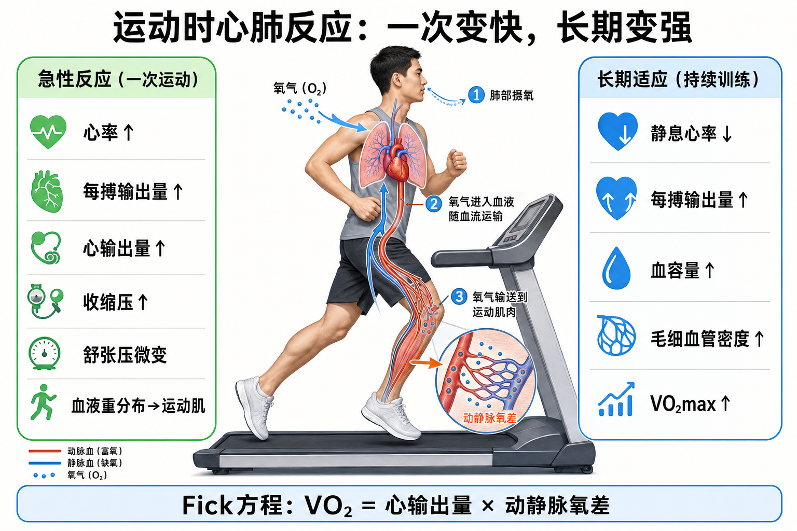

Day 34 · 心血管与呼吸对运动的急性反应与训练适应
区分一次运动的“立刻调度”和长期训练的“系统升级”，再用 Fick 方程把心肺能力讲完整。
一句话总结
一次运动像临时加班：心率、每搏量、心输出量和收缩压立刻上升，血流改送运动肌；长期训练像升级管网：静息心率下降、每搏量和血容量上升、毛细血管更多，最后把 VO2max 推高。

先看左侧急性反应，再看右侧长期适应，最后用底部 Fick 方程把“送氧量”和“肌肉取氧量”连起来。
核心要点
- 急性反应：一次运动时，身体先把氧和血快速调到正在工作的肌肉。真实例子
字面意思
急性反应是“这一堂训练里马上发生”的变化：心率加快、每搏输出量增加、心输出量上升、呼吸加深加快、血液重新分配。
大白话
像城市临时开演唱会，交通信号和公交班次马上调度，把更多资源送到人最多的场馆。
为什么影响训练
热身、递增组和强度爬坡都依赖这些调度。如果刚开始就冲高强度，心肺还没完成供血供氧切换，主观感觉会更顶。
从坐着到慢跑，心率先上来，呼吸变深，腿部皮肤和肌肉血流增加；这是正常启动，不是“突然心肺变差”。
常见误解❌以为运动时所有器官血流都一起增加。✅工作肌、心脏和皮肤优先，消化系统等区域相对让路。
- 心输出量：急性运动中，心输出量 = 心率 × 每搏输出量，决定每分钟送血总量。底层机制
心率上升让心脏每分钟泵更多次；每搏输出量上升让每次泵出更多血。两项相乘，决定氧能不能被足量送到肌肉。
真实例子指标 一次运动中 训练意义 心率 随强度上升 快速提高总泵血频率 每搏输出量 先上升，接近高强度后趋于平台 心脏每次泵血效率 心输出量 明显上升 工作肌氧输送的核心变量 同样 150 bpm，训练者因每搏量更高，可能送血更多、感觉更稳；久坐者可能只能靠心率硬顶。
常见误解❌以为心率越高一定越好。✅心率过高但每搏量和恢复跟不上，输出质量反而差。
- 血压与血液重分布：运动时收缩压上升，舒张压多微变，血液优先流向运动肌。底层机制
收缩压反映心脏射血压力；运动时泵血增强，所以它会上升。工作肌血管扩张抵消一部分外周阻力，因此舒张压通常不会同幅度上升。
真实例子跑步或骑车时腿部肌肉需要更多氧，身体会让更多血液去腿部；饭后立刻高强度训练容易不舒服，也和消化区血流被挤占有关。
训练含义高血压、胸闷、头晕或血压恢复异常时，回到 Day31 的筛查和转诊逻辑；正常收缩压上升不等于危险，但异常症状不能忽略。
- 慢性适应：长期训练不是每次都更喘，而是让安静和同强度下更省力。常见误解
静息心率下降
每搏输出量变大后，安静时不需要跳那么快也能维持血流，所以耐力训练者常有更低静息心率。
血容量增加
血浆量和红细胞相关能力改善后，运输氧和散热的余地更大，同样强度下心肺压力更低。
VO2max 提升
心脏泵血、血管输送、肌肉取氧都变好，最大摄氧能力才会整体上升。
❌以为训练适应就是“运动时心率更高”。✅真正进步常表现为同样速度心率更低、恢复更快、能维持更久。
- 毛细血管与肺扩散：耐力训练让氧更容易从血液走到肌肉，肺扩散能力也可略升。底层机制
毛细血管密度增加，像把送货点修到离肌纤维更近。氧从血液进入肌肉的距离更短、交换面积更大，肌肉更容易取氧。
真实例子低到中等强度有氧长期积累后，同样配速腿部酸胀感下降，常和局部供氧、毛细血管、线粒体使用能力改善有关。
训练含义肺扩散能力不是新手训练最常见瓶颈，但耐力训练者可略有提升。多数普通客户更先受心输出量、血容量和肌肉取氧限制。
- Fick 方程：VO2 = 心输出量 × 动静脉氧差，说明“送多少”和“拿走多少”都重要。常见误解
字面意思
VO2 是身体用氧量；心输出量是每分钟送多少血；动静脉氧差是肌肉从血液里拿走多少氧。
大白话
像外卖系统：骑手送得多是一半，客户真正收下多少也是一半。只会送、不会用，VO2 仍上不去。
考试抓手
看到 Fick 方程就想两端：中央端是心脏泵血，外周端是肌肉取氧。耐力训练两端都能适应。
❌以为 VO2max 只由心脏决定。✅心输出量重要，但动静脉氧差也决定肌肉能不能把氧用掉。
- 急性 vs 慢性：一次运动是“马上变”，长期训练是“基线变”。
训练含义问题 急性反应 慢性适应 发生时间 一堂课、几分钟内 数周到数月 典型变化 心率、心输出量、收缩压、通气上升 静息心率下降、每搏量和血容量增加 判断方式 看当次强度和症状 看同强度心率、恢复、测试表现 别把“今天练完心率高”当作适应，也别把“训练者静息心率低”当成当次反应。题目问一次运动还是长期训练，答案完全不同。
常见误区
❌很多人把一次运动后的心率升高叫训练适应。✅这是急性反应，长期适应看静息心率、每搏量、血容量和 VO2max。
❌很多人以为耐力训练只练肺。✅多数提升来自心输出量、血容量、毛细血管和肌肉取氧能力共同改善。
❌很多人背 Fick 方程只背公式。✅要会拆成中央泵血和外周取氧两端。
记忆口诀
“一次运动心跳快，收缩压上血改派；长期训练心更省，血更多、管更密；Fick 两头记，泵血乘取氧。”
翻转卡复习
实操关联
- 热身安排：先低强度递增，让心率、通气和血流完成急性调度。
- 有氧进步：同样速度心率更低、恢复更快，通常比“练完更累”更能说明适应。
- 减脂客户：长期低到中等强度有氧能改善血容量、毛细血管和用氧能力，别每次都冲阈上。
- 高血压客户：关注收缩压、症状和恢复；异常时暂停并按筛查流程处理。
- 耐力训练：用 Fick 方程拆瓶颈：中央泵血不足，还是外周取氧和肌耐力不足。
- 考试判断：看到“运动中立即”选急性反应，看到“训练数周后静息改变”选慢性适应。